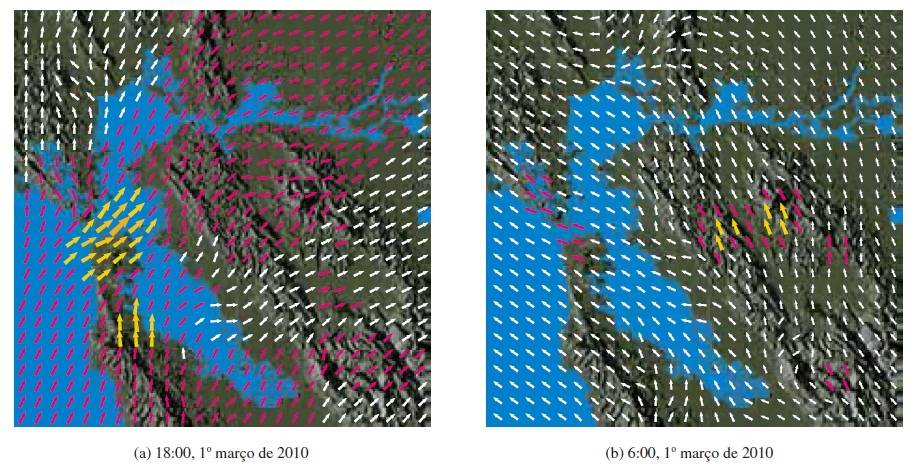

CÁLCULO VETORIAL · AULAS 49–50
Campos vetoriais e integrais de linha
Campos vetoriais, curvas parametrizadas, comprimento de arco e integrais de linha escalares e vetoriais.
1. Campo vetorial
\[\mathbf F(x,y)=P(x,y)\mathbf i+Q(x,y)\mathbf j.\]
\(P\) e \(Q\) são as componentes do campo nas direções coordenadas.

2. Curva parametrizada
\[\mathbf r(t)=\langle x(t),y(t),z(t)\rangle.\]
\(\mathbf r'(t)\) é tangente à curva.
3. Comprimento
\[L=\int_a^b\|\mathbf r'(t)\|\,dt.\]
4. Integral escalar
\[\int_Cf\,ds=\int_a^bf(\mathbf r(t))\|\mathbf r'(t)\|\,dt.\]
5. Integral de campo vetorial
\[\int_C\mathbf F\cdot d\mathbf r=\int_a^b\mathbf F(\mathbf r(t))\cdot\mathbf r'(t)\,dt.\]
Exemplo resolvido.
Para \(\mathbf F=\langle x,y\rangle\) e \(\mathbf r(t)=\langle t,t\rangle\), \(0\leq t\leq1\),
\[\mathbf r'(t)=\langle1,1\rangle.\]
\[\mathbf F(\mathbf r(t))=\langle t,t\rangle.\]
\[\mathbf F\cdot\mathbf r'=2t.\]
\[\int_0^12t\,dt=1.\]
Visualização no GeoGebra 3D
Abrir GeoGebra 3D ↗Abra o ambiente 3D para explorar geometricamente os objetos relacionados a este conteúdo.
Material organizado a partir das aulas da GCT054 e da bibliografia indicada no Plano de Ensino, especialmente Stewart (2014), Anton, Bivens e Davis (2014) e Thomas, Weir e Hass (2013).